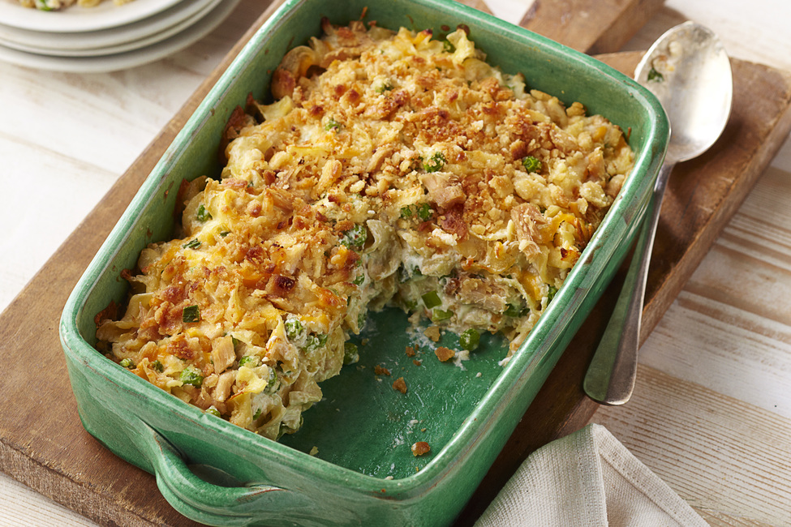

Tuna Casserole
If you can get over your hatred of tuna, you will enjoy this one
Ingredients
- 1 can of tuna
- 1 box of mac and cheese
- 1 can of cream of mushroom soup
- 1/2 cup of milk
- 1 tbsp of butter
- 6 cheese slices
Instructions
- Cook mac and cheese as normal
- Mix in cream of mushroom soup and tuna
- Put in a casserole dish and top with cheese slices
- Bake in oven at 350 for 25 minutes